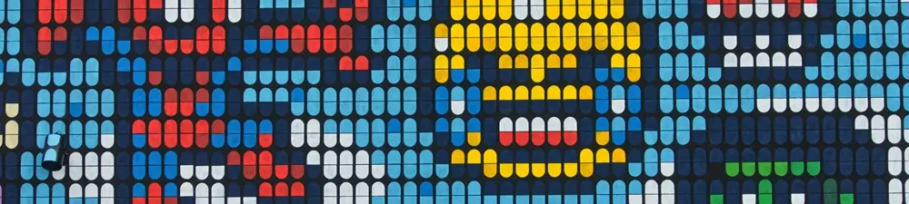

Apa Yang Dimaksud Dengan Piksel Pada Layar atau Kamera?

Para penggemar gawai (gadget) atau penyuka fotografi digital, seharusnya sudah tidak asing lagi dengan istilah "pixel" pada gambar. Jumlah pixel ini kerap kali menjadi daya tarik saat kita akan memilih gadget dengan mempertimbangkan kualitas tampilan pada layarnya. Biasanya, kita akan cenderung memilih jumlah dan kepadatan pixel yang lebih tinggi bila menginginkan kualitas tampilan yang lebih baik.
Piksel pada Spesifikasi Layar iPhone 15 dan iPhone 15 Plus
Hal ini dapat dilihat dari info yang tertera dalam promosi produk iPhone. Dilansir dari apple.com, iPhone 15 memiliki resolusi sejumlah 2556 x 1179 piksel, sementara iPhone 15 Plus memiliki resolusi yang lebih tinggi, yaitu sejumlah 2796 x 1290 piksel, menyesuaikan ukuran layar yang lebih besar. Kedua handphone tersebut memiliki kepadatan pixel sebesar 460 ppi (pixel per inch). Nah, hal ini berarti, terdapat 460 pixel dalam setiap inchi persegi layar kedua handphone tersebut. Tingginya kepadatan pixel itulah yang menyebabkan, kualitas gambar pada layar iPhone tersebut akan sangat realistis.
Konsep Piksel
Dengan kata lain, pixel dapat juga kita artikan sebagai titik-titik warna pada layar. Namun, karena ukurannya sangat kecil, kita akan kesulitan untuk melihatnya dengan mata. Oleh karenanya, konsep pixel ini dapat juga kita lihat pada diamond painting, atau gambar yang diwarnai dengan menempelkan diamond warna-warni sesuai dengan arahan pola gambarnya.
Piksel pada Diamond Painting
Pada diamond painting, satu pixel ini berarti satu diamond. Sehingga, dari jarak dekat, akan terlihat jelas titik-titik beraneka warna pada diamond painting tersebut. Namun, saat kita melihat dari jarak yang lebih jauh, gambar pada diamond painting akan terlihat lebih jelas. Namun, karena kepadatan titik-titik warna pada diamond painting jauh lebih rendah dibandingkan dengan layar handphone, maka kualitas gambarnya tidak realistis.
Piksel pada Kristik
Konsep ini juga mirip seperti saat kita membuat kristik. Dalam hal ini, pixel dapat dilihat pada warna-warni di masing-masing kotak kristik. Seperti diamond painting, kita dapat menikmati keindahan gambar pada kristik dari jarak yang lebih jauh. Ngomong-ngomong, baik kristik dan diamond painting ini cukup digemari untuk bersantai sambil mengisi waktu luang dengan membuat karya yang bisa dijadikan dekorasi ruangan.
Video tentang Piksel Pada Diamond Painting
Dengan kata lain, pixel adalah titik-titik warna pada layar. Semakin tinggi jumlah dan kepadatan pixel, artinya kualitas gambar pada layar gadget akan semakin mulus dan realistis. Video tentang pixel pada diamond painting dapat dilihat pada video pendek dibawah ini. Semoga bermanfaat, ya!